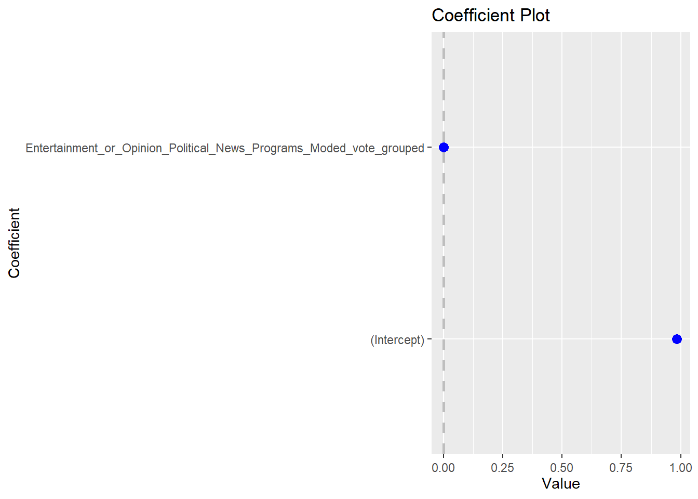
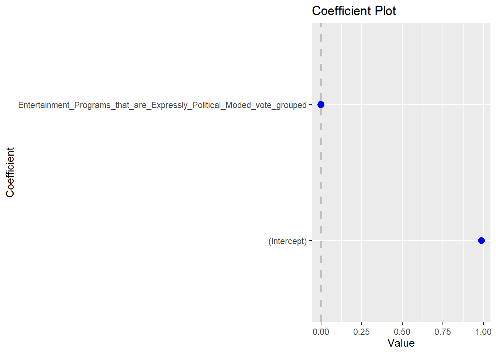
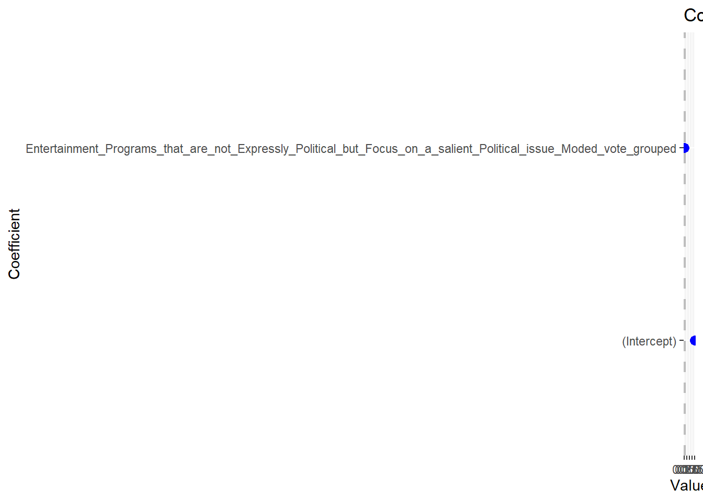

For my election data science final project my project partner and I chose to look at the effect that watching TV programs had on turnout in the 2016 election. To do this we used the ANES 2016 survey specifically its series of questions on what programs did the participant watch. We matched this up with the survey’s question on whether they voted in the 2016 election. I predicted that shows that were focused on politics would have a greater affect on turnout than shows that were apolitical. We broke the shows up into 5 categories: traditional news programs, opinion news or talk shows, entertainment shows that are expressly political, shows that are not expressly political but focus on a salient political issue (in every instance that issue is criminal justice), and shows that are apolitical. We ran a linear regression for each group but did not group the shows allowing us to see how each show affected turnout, all the variables together, each category grouped, and all the categories grouped together. Below is the full code.
Libraries
library(ggplot2)
library(tidyverse)
## -- Attaching packages -------------------------------------------------------------------------------------------------------- tidyverse 1.3.0 --
## v tibble 3.0.3 v dplyr 1.0.2
## v tidyr 1.1.2 v stringr 1.4.0
## v readr 1.3.1 v forcats 0.5.0
## v purrr 0.3.4
## -- Conflicts ----------------------------------------------------------------------------------------------------------- tidyverse_conflicts() --
## x dplyr::filter() masks stats::filter()
## x dplyr::lag() masks stats::lag()
library(anesr)
library(coefplot)
## Warning: package 'coefplot' was built under R version 4.0.3
Data
data("timeseries_2016")
anes16 <- timeseries_2016
TV <- anes16 %>% select(V161364, V161365, V161366, V161367, V161368, V161369, V161370, V161371, V161372, V161373, V161374, V161375, V161376, V161377, V161378, V161379, V161380, V161381, V161382, V161383, V161384, V161385, V161386, V161387, V161388, V161389, V161390, V161391, V161392, V161393, V161394, V161395, V161396, V161397, V161398, V161399, V161400, V161401, V161402, V161403, V161404, V161405, V161406, V161407, V161408, V161409, V161410, V161411, V162034)
Did_You_register <- anes16 %>% select(V161011)
Did_You_Vote <- anes16 %>% select(V162034)
Data Grouped
Traditional_Political_News_Programs <- TV %>% select(V161364, V161367, V161380, V161384, V161388, V161390, V161396, V161399, V161405)
Entertainment_or_Opinion_Political_News_Programs <- TV %>% select(V161365, V161370, V161371, V161372, V161375, V161379, V161381, V161382, V161386,V161391, V161393, V161400, V161403, V161404, V161409)
Entertainment_Programs_that_are_Expressly_Political <- TV %>% select(V161385, V161389, V161402, V161406,V161411)
Entertainment_Programs_that_are_not_Expressly_Political_but_Focus_on_a_salient_Political_issue <- TV %>% select(V161366, V161368, V161374, V161377, V161387, V161392, V161397, V161401)
Entertainment_Programs_with_little_to_No_Political_Content <- TV %>% select(V161369, V161373, V161376, V161378, V161383, V161394, V161395, V161398, V161407, V161410)
Twenty_Twenty <- TV %>% select (V161364) %>% unlist()
All_In_with_Chris_Hayes <- TV %>% select (V161365) %>% unlist()
The_Blacklist <- TV %>% select (V161366) %>% unlist()
CBS_Evening_News_with_Scott_Pelley <- TV %>% select (V161367) %>% unlist()
Criminal_Minds <- TV %>% select (V161368) %>% unlist()
Empire <- TV %>% select (V161369) %>% unlist()
Hannity <- TV %>% select (V161370) %>% unlist()
Jimmy_Kimmel_Live <- TV %>% select (V161371) %>% unlist()
The_Kelly_File <- TV %>% select (V161372) %>% unlist()
Modern_Family <- TV %>% select (V161373) %>% unlist()
NCIS <- TV %>% select (V161374) %>% unlist()
The_Nightly_Show_with_Larry_Wilmore <- TV %>% select (V161375) %>% unlist()
Sunday_Night_Football <- TV %>% select (V161376) %>% unlist()
Scorpion <- TV %>% select (V161377) %>% unlist()
The_Simpsons <- TV %>% select (V161378) %>% unlist()
Today <- TV %>% select (V161379) %>% unlist()
Sixty_Minutes <- TV %>% select (V161380) %>% unlist()
Anderson_Cooper_Three_Hundred_and_Sixty <- TV %>% select (V161381) %>% unlist()
CBS_This_Morning <- TV %>% select (V161382) %>% unlist()
Dancing_with_the_Stars <- TV %>% select (V161383) %>% unlist()
Face_the_Nation <- TV %>% select (V161384) %>% unlist()
House_of_Cards <- TV %>% select (V161385) %>% unlist()
Hardball_with_Chris_Matthews <- TV %>% select (V161386) %>% unlist()
Judge_Judy <- TV %>% select (V161387) %>% unlist()
Meet_the_Press <- TV %>% select (V161388) %>% unlist()
Game_of_Thrones <- TV %>% select (V161389) %>% unlist()
NBC_Nightly_News_with_Lester_Holt <- TV %>% select (V161390) %>% unlist()
On_the_Record_with_Greta_Van_Susteren <- TV %>% select (V161391) %>% unlist()
Daredevil <- TV %>% select (V161392) %>% unlist()
The_Rachel_Maddow_Show <- TV %>% select (V161393) %>% unlist()
Shark_Tank <- TV %>% select (V161394) %>% unlist()
The_Voice <- TV %>% select(V161395) %>% unlist()
ABC_World_News_with_David_Muir <- TV %>% select (V161396) %>% unlist()
Blue_bloods <- TV %>% select (V161397) %>% unlist()
Conan <- TV %>% select (V161398) %>% unlist()
Dateline_NBC <- TV %>% select (V161399) %>% unlist()
Good_Morning_America <- TV %>% select (V161400) %>% unlist()
Hawaii_Five_O <- TV %>% select (V161401) %>% unlist()
Madam_Secretary <- TV %>% select (V161402) %>% unlist()
Nancy_Grace <- TV %>% select (V161403) %>% unlist()
Erin_Burnett_OutFront <- TV %>% select (V161404) %>% unlist()
PBS_News_Hour <- TV %>% select (V161405) %>% unlist()
Scandal <- TV %>% select (V161406) %>% unlist()
The_Big_Bang_Theory <- TV %>% select (V161407) %>% unlist()
The_Late_Show_with_Stephen_Colbert <- TV %>% select(V161408) %>% unlist()
The_O_Reilly_Factor <- TV %>% select (V161409) %>% unlist()
The_Tonight_Show_Starring_Jimmy_Fallon <- TV %>% select(V161410) %>% unlist()
Alpha_House <- TV %>% select(V161411) %>% unlist()
Regression for Traditional Political News Programs and Turnout
clean <- function(x){ifelse (x < 0, NA, x)}
anes_clean <- anes16 %>%
mutate(across (everything(), clean)) %>%
mutate(vote = case_when(
V162034 == 2 ~ 0,
V162034 == 1 ~ 1))
Traditional_Political_News_Programs_Moded_vote <- as.data.frame(Twenty_Twenty + CBS_Evening_News_with_Scott_Pelley + Sixty_Minutes + Face_the_Nation + Meet_the_Press + NBC_Nightly_News_with_Lester_Holt + ABC_World_News_with_David_Muir + Dateline_NBC + PBS_News_Hour) %>%
rename(count = 1) %>%
mutate(count = ifelse(count <0, NA, count)) %>% unlist()
Traditional_Political_News_Programs_Moded_vote_lm <- lm(vote ~ Twenty_Twenty + CBS_Evening_News_with_Scott_Pelley + Sixty_Minutes + Face_the_Nation + Meet_the_Press + NBC_Nightly_News_with_Lester_Holt + ABC_World_News_with_David_Muir + Dateline_NBC + PBS_News_Hour , data = anes_clean)
summary(Traditional_Political_News_Programs_Moded_vote_lm)
##
## Call:
## lm(formula = vote ~ Twenty_Twenty + CBS_Evening_News_with_Scott_Pelley +
## Sixty_Minutes + Face_the_Nation + Meet_the_Press + NBC_Nightly_News_with_Lester_Holt +
## ABC_World_News_with_David_Muir + Dateline_NBC + PBS_News_Hour,
## data = anes_clean)
##
## Residuals:
## Min 1Q Median 3Q Max
## -0.99346 0.01256 0.01387 0.01620 0.03215
##
## Coefficients:
## Estimate Std. Error t value Pr(>|t|)
## (Intercept) 0.986125 0.002497 394.916 <2e-16 ***
## Twenty_Twenty -0.012407 0.006985 -1.776 0.0758 .
## CBS_Evening_News_with_Scott_Pelley -0.002323 0.006870 -0.338 0.7353
## Sixty_Minutes -0.001106 0.006263 -0.177 0.8598
## Face_the_Nation 0.007194 0.008645 0.832 0.4054
## Meet_the_Press -0.001906 0.008149 -0.234 0.8151
## NBC_Nightly_News_with_Lester_Holt 0.000358 0.006304 0.057 0.9547
## ABC_World_News_with_David_Muir -0.002442 0.006451 -0.378 0.7051
## Dateline_NBC 0.009295 0.006513 1.427 0.1537
## PBS_News_Hour 0.002024 0.007026 0.288 0.7733
## ---
## Signif. codes: 0 '***' 0.001 '**' 0.01 '*' 0.05 '.' 0.1 ' ' 1
##
## Residual standard error: 0.1188 on 2720 degrees of freedom
## (1540 observations deleted due to missingness)
## Multiple R-squared: 0.002092, Adjusted R-squared: -0.00121
## F-statistic: 0.6335 on 9 and 2720 DF, p-value: 0.7692
coefplot::coefplot(Traditional_Political_News_Programs_Moded_vote_lm)

Regression for Entertainment or Opinion Political News Programs and Turnout
clean <- function(x){ifelse (x < 0, NA, x)}
anes_clean <- anes16 %>%
mutate(across (everything(), clean)) %>%
mutate(vote = case_when(
V162034 == 2 ~ 0,
V162034 == 1 ~ 1))
Entertainment_or_Opinion_Political_News_Programs_Moded_vote <- as.data.frame(All_In_with_Chris_Hayes + Hannity + Jimmy_Kimmel_Live + The_Kelly_File + The_Nightly_Show_with_Larry_Wilmore + Today + Anderson_Cooper_Three_Hundred_and_Sixty + CBS_This_Morning + Hardball_with_Chris_Matthews + On_the_Record_with_Greta_Van_Susteren + The_Rachel_Maddow_Show + Good_Morning_America + Nancy_Grace + Erin_Burnett_OutFront + The_O_Reilly_Factor) %>%
rename(count = 1) %>%
mutate(count = ifelse(count <0, NA, count)) %>% unlist()
Entertainment_or_Opinion_Political_News_Programs_Moded_vote_lm <- lm(vote ~ All_In_with_Chris_Hayes + Hannity + Jimmy_Kimmel_Live + The_Kelly_File + The_Nightly_Show_with_Larry_Wilmore + Today + Anderson_Cooper_Three_Hundred_and_Sixty + CBS_This_Morning + Hardball_with_Chris_Matthews + On_the_Record_with_Greta_Van_Susteren + The_Rachel_Maddow_Show + Good_Morning_America + Nancy_Grace + Erin_Burnett_OutFront + The_O_Reilly_Factor , data = anes_clean)
summary(Entertainment_or_Opinion_Political_News_Programs_Moded_vote_lm)
##
## Call:
## lm(formula = vote ~ All_In_with_Chris_Hayes + Hannity + Jimmy_Kimmel_Live +
## The_Kelly_File + The_Nightly_Show_with_Larry_Wilmore + Today +
## Anderson_Cooper_Three_Hundred_and_Sixty + CBS_This_Morning +
## Hardball_with_Chris_Matthews + On_the_Record_with_Greta_Van_Susteren +
## The_Rachel_Maddow_Show + Good_Morning_America + Nancy_Grace +
## Erin_Burnett_OutFront + The_O_Reilly_Factor, data = anes_clean)
##
## Residuals:
## Min 1Q Median 3Q Max
## -0.99420 0.01009 0.01502 0.01581 0.05137
##
## Coefficients:
## Estimate Std. Error t value Pr(>|t|)
## (Intercept) 0.984983 0.002870 343.204 <2e-16
## All_In_with_Chris_Hayes 0.010817 0.014365 0.753 0.4515
## Hannity 0.004842 0.009778 0.495 0.6205
## Jimmy_Kimmel_Live -0.013379 0.007707 -1.736 0.0827
## The_Kelly_File -0.005798 0.010049 -0.577 0.5640
## The_Nightly_Show_with_Larry_Wilmore -0.011037 0.014019 -0.787 0.4312
## Today 0.008840 0.006327 1.397 0.1625
## Anderson_Cooper_Three_Hundred_and_Sixty 0.004924 0.007310 0.674 0.5006
## CBS_This_Morning -0.004403 0.006562 -0.671 0.5024
## Hardball_with_Chris_Matthews -0.006582 0.011108 -0.593 0.5535
## On_the_Record_with_Greta_Van_Susteren -0.003124 0.010439 -0.299 0.7647
## The_Rachel_Maddow_Show 0.008883 0.010386 0.855 0.3925
## Good_Morning_America -0.006726 0.006057 -1.110 0.2670
## Nancy_Grace 0.005936 0.010851 0.547 0.5844
## Erin_Burnett_OutFront -0.003848 0.012282 -0.313 0.7541
## The_O_Reilly_Factor 0.009213 0.008934 1.031 0.3026
##
## (Intercept) ***
## All_In_with_Chris_Hayes
## Hannity
## Jimmy_Kimmel_Live .
## The_Kelly_File
## The_Nightly_Show_with_Larry_Wilmore
## Today
## Anderson_Cooper_Three_Hundred_and_Sixty
## CBS_This_Morning
## Hardball_with_Chris_Matthews
## On_the_Record_with_Greta_Van_Susteren
## The_Rachel_Maddow_Show
## Good_Morning_America
## Nancy_Grace
## Erin_Burnett_OutFront
## The_O_Reilly_Factor
## ---
## Signif. codes: 0 '***' 0.001 '**' 0.01 '*' 0.05 '.' 0.1 ' ' 1
##
## Residual standard error: 0.1188 on 2714 degrees of freedom
## (1540 observations deleted due to missingness)
## Multiple R-squared: 0.00437, Adjusted R-squared: -0.001133
## F-statistic: 0.7941 on 15 and 2714 DF, p-value: 0.6855
coefplot::coefplot(Entertainment_or_Opinion_Political_News_Programs_Moded_vote_lm)

### Regression for Entertainment Programs that are Expressly Political and Turnout ###
clean <- function(x){ifelse (x < 0, NA, x)}
anes_clean <- anes16 %>%
mutate(across (everything(), clean)) %>%
mutate(vote = case_when(
V162034 == 2 ~ 0,
V162034 == 1 ~ 1))
Entertainment_Programs_that_are_Expressly_Political_Moded_vote <- as.data.frame(House_of_Cards + Game_of_Thrones + Madam_Secretary + Scandal + Alpha_House) %>%
rename(count = 1) %>%
mutate(count = ifelse(count <0, NA, count)) %>% unlist()
Entertainment_Programs_that_are_Expressly_Political_Moded_vote_lm <- lm(vote ~ House_of_Cards + Game_of_Thrones + Madam_Secretary + Scandal + Alpha_House , data = anes_clean)
summary(Entertainment_Programs_that_are_Expressly_Political_Moded_vote_lm)
##
## Call:
## lm(formula = vote ~ House_of_Cards + Game_of_Thrones + Madam_Secretary +
## Scandal + Alpha_House, data = anes_clean)
##
## Residuals:
## Min 1Q Median 3Q Max
## -1.00082 0.01457 0.01457 0.01457 0.03094
##
## Coefficients:
## Estimate Std. Error t value Pr(>|t|)
## (Intercept) 0.9854341 0.0025930 380.032 <2e-16 ***
## House_of_Cards -0.0033592 0.0084258 -0.399 0.6902
## Game_of_Thrones -0.0076701 0.0071404 -1.074 0.2828
## Madam_Secretary -0.0006225 0.0076568 -0.081 0.9352
## Scandal 0.0153883 0.0083026 1.853 0.0639 .
## Alpha_House -0.0053473 0.0124206 -0.431 0.6669
## ---
## Signif. codes: 0 '***' 0.001 '**' 0.01 '*' 0.05 '.' 0.1 ' ' 1
##
## Residual standard error: 0.1187 on 2724 degrees of freedom
## (1540 observations deleted due to missingness)
## Multiple R-squared: 0.001953, Adjusted R-squared: 0.0001213
## F-statistic: 1.066 on 5 and 2724 DF, p-value: 0.3771
coefplot::coefplot(Entertainment_Programs_that_are_Expressly_Political_Moded_vote_lm)
Regresion for Entertainment Programs that are not Expressly Political but Focus on a Salient Political issue and Turnout
clean <- function(x){ifelse (x < 0, NA, x)}
anes_clean <- anes16 %>%
mutate(across (everything(), clean)) %>%
mutate(vote = case_when(
V162034 == 2 ~ 0,
V162034 == 1 ~ 1))
Entertainment_Programs_that_are_not_Expressly_Political_but_Focus_on_a_salient_Political_issue_Moded_vote <- as.data.frame( The_Blacklist + Criminal_Minds + NCIS + Scorpion + Judge_Judy + Daredevil + Blue_bloods + Hawaii_Five_O) %>%
rename(count = 1) %>%
mutate(count = ifelse(count <0, NA, count)) %>% unlist()
Entertainment_Programs_that_are_not_Expressly_Political_but_Focus_on_a_salient_Political_issue_Moded_vote_lm <- lm(vote ~ The_Blacklist + Criminal_Minds + NCIS + Scorpion + Judge_Judy + Daredevil + Blue_bloods + Hawaii_Five_O, data = anes_clean)
summary(Entertainment_Programs_that_are_not_Expressly_Political_but_Focus_on_a_salient_Political_issue_Moded_vote_lm)
##
## Call:
## lm(formula = vote ~ The_Blacklist + Criminal_Minds + NCIS + Scorpion +
## Judge_Judy + Daredevil + Blue_bloods + Hawaii_Five_O, data = anes_clean)
##
## Residuals:
## Min 1Q Median 3Q Max
## -0.99434 0.01312 0.01479 0.01479 0.03306
##
## Coefficients:
## Estimate Std. Error t value Pr(>|t|)
## (Intercept) 0.9852146 0.0025579 385.171 <2e-16 ***
## The_Blacklist 0.0025467 0.0075855 0.336 0.737
## Criminal_Minds 0.0039816 0.0066164 0.602 0.547
## NCIS -0.0003444 0.0067856 -0.051 0.960
## Scorpion -0.0118022 0.0093471 -1.263 0.207
## Judge_Judy -0.0061318 0.0069481 -0.883 0.378
## Daredevil 0.0063661 0.0098564 0.646 0.518
## Blue_bloods 0.0051421 0.0075359 0.682 0.495
## Hawaii_Five_O -0.0013254 0.0091833 -0.144 0.885
## ---
## Signif. codes: 0 '***' 0.001 '**' 0.01 '*' 0.05 '.' 0.1 ' ' 1
##
## Residual standard error: 0.1188 on 2721 degrees of freedom
## (1540 observations deleted due to missingness)
## Multiple R-squared: 0.001334, Adjusted R-squared: -0.001603
## F-statistic: 0.4542 on 8 and 2721 DF, p-value: 0.8885
coefplot::coefplot(Entertainment_Programs_that_are_not_Expressly_Political_but_Focus_on_a_salient_Political_issue_Moded_vote_lm)
Regresion for Entertainment Programs with little to No Political Content and Turnout
clean <- function(x){ifelse (x < 0, NA, x)}
anes_clean <- anes16 %>%
mutate(across (everything(), clean)) %>%
mutate(vote = case_when(
V162034 == 2 ~ 0,
V162034 == 1 ~ 1))
Entertainment_Programs_with_little_to_No_Political_Content_moded_vote <- as.data.frame(Empire + Modern_Family + Sunday_Night_Football + The_Simpsons + Dancing_with_the_Stars + Shark_Tank + The_Voice + Conan + The_Big_Bang_Theory + The_Tonight_Show_Starring_Jimmy_Fallon) %>%
rename(count = 1) %>%
mutate(count = ifelse(count <0, NA, count)) %>% unlist()
Entertainment_Programs_with_little_to_No_Political_Content_moded_vote_lm <- lm(vote ~ Empire + Modern_Family + Sunday_Night_Football + The_Simpsons + Dancing_with_the_Stars + Shark_Tank + The_Voice + Conan + The_Big_Bang_Theory + The_Tonight_Show_Starring_Jimmy_Fallon, data = anes_clean)
summary(Entertainment_Programs_with_little_to_No_Political_Content_moded_vote_lm)
##
## Call:
## lm(formula = vote ~ Empire + Modern_Family + Sunday_Night_Football +
## The_Simpsons + Dancing_with_the_Stars + Shark_Tank + The_Voice +
## Conan + The_Big_Bang_Theory + The_Tonight_Show_Starring_Jimmy_Fallon,
## data = anes_clean)
##
## Residuals:
## Min 1Q Median 3Q Max
## -0.99580 0.00878 0.01596 0.01975 0.05268
##
## Coefficients:
## Estimate Std. Error t value Pr(>|t|)
## (Intercept) 0.9802456 0.0029046 337.475 < 2e-16
## Empire -0.0014625 0.0086926 -0.168 0.86640
## Modern_Family 0.0046404 0.0066628 0.696 0.48619
## Sunday_Night_Football 0.0037926 0.0050503 0.751 0.45273
## The_Simpsons 0.0030919 0.0098142 0.315 0.75275
## Dancing_with_the_Stars -0.0009274 0.0068528 -0.135 0.89236
## Shark_Tank -0.0020727 0.0065149 -0.318 0.75040
## The_Voice 0.0104126 0.0064250 1.621 0.10521
## Conan -0.0308494 0.0110720 -2.786 0.00537
## The_Big_Bang_Theory 0.0092566 0.0055350 1.672 0.09456
## The_Tonight_Show_Starring_Jimmy_Fallon 0.0013532 0.0065185 0.208 0.83556
##
## (Intercept) ***
## Empire
## Modern_Family
## Sunday_Night_Football
## The_Simpsons
## Dancing_with_the_Stars
## Shark_Tank
## The_Voice
## Conan **
## The_Big_Bang_Theory .
## The_Tonight_Show_Starring_Jimmy_Fallon
## ---
## Signif. codes: 0 '***' 0.001 '**' 0.01 '*' 0.05 '.' 0.1 ' ' 1
##
## Residual standard error: 0.1186 on 2719 degrees of freedom
## (1540 observations deleted due to missingness)
## Multiple R-squared: 0.005242, Adjusted R-squared: 0.001584
## F-statistic: 1.433 on 10 and 2719 DF, p-value: 0.1592
coefplot::coefplot(Entertainment_Programs_with_little_to_No_Political_Content_moded_vote_lm)
Regression for All Variables and Turnout
clean <- function(x){ifelse (x < 0, NA, x)}
anes_clean <- anes16 %>%
mutate(across (everything(), clean)) %>%
mutate(vote = case_when(
V162034 == 2 ~ 0,
V162034 == 1 ~ 1))
All_Variables_Moded_vote <- as.data.frame(Twenty_Twenty + CBS_Evening_News_with_Scott_Pelley + Sixty_Minutes + Face_the_Nation + Meet_the_Press + NBC_Nightly_News_with_Lester_Holt + ABC_World_News_with_David_Muir + Dateline_NBC + PBS_News_Hour + All_In_with_Chris_Hayes + Hannity + Jimmy_Kimmel_Live + The_Kelly_File + The_Nightly_Show_with_Larry_Wilmore + Today + Anderson_Cooper_Three_Hundred_and_Sixty + CBS_This_Morning + Hardball_with_Chris_Matthews + On_the_Record_with_Greta_Van_Susteren + The_Rachel_Maddow_Show + Good_Morning_America + Nancy_Grace + Erin_Burnett_OutFront + The_O_Reilly_Factor + House_of_Cards + Game_of_Thrones + Madam_Secretary + Scandal + Alpha_House + The_Blacklist + Criminal_Minds + NCIS + Scorpion + Judge_Judy + Daredevil + Blue_bloods + Hawaii_Five_O + Empire + Modern_Family + Sunday_Night_Football + The_Simpsons + Dancing_with_the_Stars + Shark_Tank + The_Voice + Conan + The_Big_Bang_Theory + The_Tonight_Show_Starring_Jimmy_Fallon) %>%
rename(count = 1) %>%
mutate(count = ifelse(count <0, NA, count)) %>% unlist()
All_Variables_Moded_vote_lm <- lm(vote ~ Twenty_Twenty + CBS_Evening_News_with_Scott_Pelley + Sixty_Minutes + Face_the_Nation + Meet_the_Press + NBC_Nightly_News_with_Lester_Holt + ABC_World_News_with_David_Muir + Dateline_NBC + PBS_News_Hour + All_In_with_Chris_Hayes + Hannity + Jimmy_Kimmel_Live + The_Kelly_File + The_Nightly_Show_with_Larry_Wilmore + Today + Anderson_Cooper_Three_Hundred_and_Sixty + CBS_This_Morning + Hardball_with_Chris_Matthews + On_the_Record_with_Greta_Van_Susteren + The_Rachel_Maddow_Show + Good_Morning_America + Nancy_Grace + Erin_Burnett_OutFront + The_O_Reilly_Factor + House_of_Cards + Game_of_Thrones + Madam_Secretary + Scandal + Alpha_House + The_Blacklist + Criminal_Minds + NCIS + Scorpion + Judge_Judy + Daredevil + Blue_bloods + Hawaii_Five_O + Empire + Modern_Family + Sunday_Night_Football + The_Simpsons + Dancing_with_the_Stars + Shark_Tank + The_Voice + Conan + The_Big_Bang_Theory + The_Tonight_Show_Starring_Jimmy_Fallon, data = anes_clean)
summary(All_Variables_Moded_vote_lm)
##
## Call:
## lm(formula = vote ~ Twenty_Twenty + CBS_Evening_News_with_Scott_Pelley +
## Sixty_Minutes + Face_the_Nation + Meet_the_Press + NBC_Nightly_News_with_Lester_Holt +
## ABC_World_News_with_David_Muir + Dateline_NBC + PBS_News_Hour +
## All_In_with_Chris_Hayes + Hannity + Jimmy_Kimmel_Live + The_Kelly_File +
## The_Nightly_Show_with_Larry_Wilmore + Today + Anderson_Cooper_Three_Hundred_and_Sixty +
## CBS_This_Morning + Hardball_with_Chris_Matthews + On_the_Record_with_Greta_Van_Susteren +
## The_Rachel_Maddow_Show + Good_Morning_America + Nancy_Grace +
## Erin_Burnett_OutFront + The_O_Reilly_Factor + House_of_Cards +
## Game_of_Thrones + Madam_Secretary + Scandal + Alpha_House +
## The_Blacklist + Criminal_Minds + NCIS + Scorpion + Judge_Judy +
## Daredevil + Blue_bloods + Hawaii_Five_O + Empire + Modern_Family +
## Sunday_Night_Football + The_Simpsons + Dancing_with_the_Stars +
## Shark_Tank + The_Voice + Conan + The_Big_Bang_Theory + The_Tonight_Show_Starring_Jimmy_Fallon,
## data = anes_clean)
##
## Residuals:
## Min 1Q Median 3Q Max
## -0.99759 0.00492 0.01618 0.02042 0.07468
##
## Coefficients:
## Estimate Std. Error t value Pr(>|t|)
## (Intercept) 9.816e-01 3.688e-03 266.134 < 2e-16
## Twenty_Twenty -1.279e-02 7.297e-03 -1.753 0.07971
## CBS_Evening_News_with_Scott_Pelley 3.207e-04 7.404e-03 0.043 0.96546
## Sixty_Minutes -4.663e-04 6.427e-03 -0.073 0.94216
## Face_the_Nation 5.142e-03 9.039e-03 0.569 0.56949
## Meet_the_Press -4.506e-03 8.691e-03 -0.519 0.60415
## NBC_Nightly_News_with_Lester_Holt -1.907e-03 6.660e-03 -0.286 0.77466
## ABC_World_News_with_David_Muir 6.189e-05 6.970e-03 0.009 0.99292
## Dateline_NBC 7.106e-03 6.772e-03 1.049 0.29413
## PBS_News_Hour 2.804e-03 7.687e-03 0.365 0.71534
## All_In_with_Chris_Hayes 1.465e-02 1.465e-02 1.000 0.31736
## Hannity 6.404e-03 9.886e-03 0.648 0.51714
## Jimmy_Kimmel_Live -1.031e-02 8.571e-03 -1.203 0.22911
## The_Kelly_File -5.903e-03 1.012e-02 -0.583 0.55994
## The_Nightly_Show_with_Larry_Wilmore 8.035e-03 1.642e-02 0.489 0.62455
## Today 7.708e-03 6.855e-03 1.124 0.26098
## Anderson_Cooper_Three_Hundred_and_Sixty 4.274e-03 7.535e-03 0.567 0.57062
## CBS_This_Morning -3.739e-03 7.163e-03 -0.522 0.60168
## Hardball_with_Chris_Matthews -7.576e-03 1.143e-02 -0.663 0.50746
## On_the_Record_with_Greta_Van_Susteren 6.052e-04 1.065e-02 0.057 0.95470
## The_Rachel_Maddow_Show 1.091e-02 1.054e-02 1.035 0.30080
## Good_Morning_America -5.637e-03 6.501e-03 -0.867 0.38597
## Nancy_Grace 1.089e-02 1.190e-02 0.915 0.36041
## Erin_Burnett_OutFront 1.395e-03 1.316e-02 0.106 0.91555
## The_O_Reilly_Factor 9.940e-03 9.049e-03 1.099 0.27207
## House_of_Cards -6.126e-03 8.829e-03 -0.694 0.48780
## Game_of_Thrones -7.548e-03 7.509e-03 -1.005 0.31487
## Madam_Secretary 4.601e-04 8.983e-03 0.051 0.95915
## Scandal 1.867e-02 9.214e-03 2.026 0.04285
## Alpha_House -2.093e-02 2.311e-02 -0.905 0.36529
## The_Blacklist 7.062e-04 8.134e-03 0.087 0.93082
## Criminal_Minds 2.961e-03 6.849e-03 0.432 0.66551
## NCIS -3.286e-03 6.945e-03 -0.473 0.63619
## Scorpion -1.085e-02 9.884e-03 -1.098 0.27240
## Judge_Judy -6.338e-03 7.742e-03 -0.819 0.41307
## Daredevil 1.403e-02 1.354e-02 1.036 0.30014
## Blue_bloods 3.095e-03 7.857e-03 0.394 0.69370
## Hawaii_Five_O -1.805e-03 9.437e-03 -0.191 0.84836
## Empire -9.613e-03 9.941e-03 -0.967 0.33361
## Modern_Family 4.567e-03 6.840e-03 0.668 0.50439
## Sunday_Night_Football 2.050e-03 5.217e-03 0.393 0.69438
## The_Simpsons -1.109e-03 1.071e-02 -0.104 0.91757
## Dancing_with_the_Stars -1.511e-03 7.291e-03 -0.207 0.83581
## Shark_Tank -1.554e-03 6.796e-03 -0.229 0.81921
## The_Voice 8.190e-03 6.679e-03 1.226 0.22021
## Conan -3.638e-02 1.313e-02 -2.770 0.00564
## The_Big_Bang_Theory 1.090e-02 5.821e-03 1.872 0.06136
## The_Tonight_Show_Starring_Jimmy_Fallon 1.772e-03 7.033e-03 0.252 0.80105
##
## (Intercept) ***
## Twenty_Twenty .
## CBS_Evening_News_with_Scott_Pelley
## Sixty_Minutes
## Face_the_Nation
## Meet_the_Press
## NBC_Nightly_News_with_Lester_Holt
## ABC_World_News_with_David_Muir
## Dateline_NBC
## PBS_News_Hour
## All_In_with_Chris_Hayes
## Hannity
## Jimmy_Kimmel_Live
## The_Kelly_File
## The_Nightly_Show_with_Larry_Wilmore
## Today
## Anderson_Cooper_Three_Hundred_and_Sixty
## CBS_This_Morning
## Hardball_with_Chris_Matthews
## On_the_Record_with_Greta_Van_Susteren
## The_Rachel_Maddow_Show
## Good_Morning_America
## Nancy_Grace
## Erin_Burnett_OutFront
## The_O_Reilly_Factor
## House_of_Cards
## Game_of_Thrones
## Madam_Secretary
## Scandal *
## Alpha_House
## The_Blacklist
## Criminal_Minds
## NCIS
## Scorpion
## Judge_Judy
## Daredevil
## Blue_bloods
## Hawaii_Five_O
## Empire
## Modern_Family
## Sunday_Night_Football
## The_Simpsons
## Dancing_with_the_Stars
## Shark_Tank
## The_Voice
## Conan **
## The_Big_Bang_Theory .
## The_Tonight_Show_Starring_Jimmy_Fallon
## ---
## Signif. codes: 0 '***' 0.001 '**' 0.01 '*' 0.05 '.' 0.1 ' ' 1
##
## Residual standard error: 0.1188 on 2682 degrees of freedom
## (1540 observations deleted due to missingness)
## Multiple R-squared: 0.01544, Adjusted R-squared: -0.001816
## F-statistic: 0.8947 on 47 and 2682 DF, p-value: 0.6763
coefplot::coefplot (All_Variables_Moded_vote_lm)

Regression for Traditional Political News Programs and Turnout Grouped
clean <- function(x){ifelse (x < 0, NA, x)}
anes_clean <- anes16 %>%
mutate(across (everything(), clean)) %>%
mutate(vote = case_when(
V162034 == 2 ~ 0,
V162034 == 1 ~ 1))
Traditional_Political_News_Programs_Moded_vote_grouped <- as.data.frame(Twenty_Twenty + CBS_Evening_News_with_Scott_Pelley + Sixty_Minutes + Face_the_Nation + Meet_the_Press + NBC_Nightly_News_with_Lester_Holt + ABC_World_News_with_David_Muir + Dateline_NBC + PBS_News_Hour) %>%
rename(count = 1) %>%
mutate(count = ifelse(count <0, NA, count)) %>% unlist()
Traditional_Political_News_Programs_Moded_vote_grouped_lm <- lm(vote ~ Traditional_Political_News_Programs_Moded_vote_grouped , data = anes_clean)
summary(Traditional_Political_News_Programs_Moded_vote_grouped_lm)
##
## Call:
## lm(formula = vote ~ Traditional_Political_News_Programs_Moded_vote_grouped,
## data = anes_clean)
##
## Residuals:
## Min 1Q Median 3Q Max
## -0.98659 0.01341 0.01395 0.01503 0.01826
##
## Coefficients:
## Estimate Std. Error
## (Intercept) 0.9865925 0.0032349
## Traditional_Political_News_Programs_Moded_vote_grouped -0.0005392 0.0012025
## t value Pr(>|t|)
## (Intercept) 304.986 <2e-16 ***
## Traditional_Political_News_Programs_Moded_vote_grouped -0.448 0.654
## ---
## Signif. codes: 0 '***' 0.001 '**' 0.01 '*' 0.05 '.' 0.1 ' ' 1
##
## Residual standard error: 0.1191 on 2433 degrees of freedom
## (1835 observations deleted due to missingness)
## Multiple R-squared: 8.265e-05, Adjusted R-squared: -0.0003283
## F-statistic: 0.2011 on 1 and 2433 DF, p-value: 0.6539
coefplot::coefplot(Traditional_Political_News_Programs_Moded_vote_grouped_lm)
Regression for Entertainment or Opinion Political News Programs and Turnout Grouped
clean <- function(x){ifelse (x < 0, NA, x)}
anes_clean <- anes16 %>%
mutate(across (everything(), clean)) %>%
mutate(vote = case_when(
V162034 == 2 ~ 0,
V162034 == 1 ~ 1))
Entertainment_or_Opinion_Political_News_Programs_Moded_vote_grouped <- as.data.frame(All_In_with_Chris_Hayes + Hannity + Jimmy_Kimmel_Live + The_Kelly_File + The_Nightly_Show_with_Larry_Wilmore + Today + Anderson_Cooper_Three_Hundred_and_Sixty + CBS_This_Morning + Hardball_with_Chris_Matthews + On_the_Record_with_Greta_Van_Susteren + The_Rachel_Maddow_Show + Good_Morning_America + Nancy_Grace + Erin_Burnett_OutFront + The_O_Reilly_Factor) %>%
rename(count = 1) %>%
mutate(count = ifelse(count <0, NA, count)) %>% unlist()
Entertainment_or_Opinion_Political_News_Programs_Moded_vote_grouped_lm <- lm(vote ~Entertainment_or_Opinion_Political_News_Programs_Moded_vote_grouped , data = anes_clean)
summary(Entertainment_or_Opinion_Political_News_Programs_Moded_vote_grouped_lm)
##
## Call:
## lm(formula = vote ~ Entertainment_or_Opinion_Political_News_Programs_Moded_vote_grouped,
## data = anes_clean)
##
## Residuals:
## Min 1Q Median 3Q Max
## -0.99250 0.01300 0.01520 0.01631 0.01631
##
## Coefficients:
## Estimate
## (Intercept) 0.983694
## Entertainment_or_Opinion_Political_News_Programs_Moded_vote_grouped 0.001101
## Std. Error
## (Intercept) 0.003305
## Entertainment_or_Opinion_Political_News_Programs_Moded_vote_grouped 0.001287
## t value
## (Intercept) 297.631
## Entertainment_or_Opinion_Political_News_Programs_Moded_vote_grouped 0.855
## Pr(>|t|)
## (Intercept) <2e-16
## Entertainment_or_Opinion_Political_News_Programs_Moded_vote_grouped 0.392
##
## (Intercept) ***
## Entertainment_or_Opinion_Political_News_Programs_Moded_vote_grouped
## ---
## Signif. codes: 0 '***' 0.001 '**' 0.01 '*' 0.05 '.' 0.1 ' ' 1
##
## Residual standard error: 0.1191 on 2433 degrees of freedom
## (1835 observations deleted due to missingness)
## Multiple R-squared: 0.0003006, Adjusted R-squared: -0.0001103
## F-statistic: 0.7316 on 1 and 2433 DF, p-value: 0.3924
coefplot::coefplot(Entertainment_or_Opinion_Political_News_Programs_Moded_vote_grouped_lm)

### Regression for Entertainment Programs that are Expressly Political and Turnout Grouped ###
clean <- function(x){ifelse (x < 0, NA, x)}
anes_clean <- anes16 %>%
mutate(across (everything(), clean)) %>%
mutate(vote = case_when(
V162034 == 2 ~ 0,
V162034 == 1 ~ 1))
Entertainment_Programs_that_are_Expressly_Political_Moded_vote_grouped <- as.data.frame (House_of_Cards + Game_of_Thrones + Madam_Secretary + Scandal + Alpha_House) %>%
rename(count = 1) %>%
mutate(count = ifelse(count <0, NA, count)) %>% unlist()
Entertainment_Programs_that_are_Expressly_Political_Moded_vote_grouped_lm <- lm (vote ~ Entertainment_Programs_that_are_Expressly_Political_Moded_vote_grouped , data = anes_clean)
summary(Entertainment_Programs_that_are_Expressly_Political_Moded_vote_grouped_lm)
##
## Call:
## lm(formula = vote ~ Entertainment_Programs_that_are_Expressly_Political_Moded_vote_grouped,
## data = anes_clean)
##
## Residuals:
## Min 1Q Median 3Q Max
## -0.98666 0.01334 0.01334 0.01561 0.02243
##
## Coefficients:
## Estimate
## (Intercept) 0.986661
## Entertainment_Programs_that_are_Expressly_Political_Moded_vote_grouped -0.002274
## Std. Error
## (Intercept) 0.002827
## Entertainment_Programs_that_are_Expressly_Political_Moded_vote_grouped 0.003238
## t value
## (Intercept) 348.991
## Entertainment_Programs_that_are_Expressly_Political_Moded_vote_grouped -0.702
## Pr(>|t|)
## (Intercept) <2e-16
## Entertainment_Programs_that_are_Expressly_Political_Moded_vote_grouped 0.483
##
## (Intercept) ***
## Entertainment_Programs_that_are_Expressly_Political_Moded_vote_grouped
## ---
## Signif. codes: 0 '***' 0.001 '**' 0.01 '*' 0.05 '.' 0.1 ' ' 1
##
## Residual standard error: 0.1191 on 2433 degrees of freedom
## (1835 observations deleted due to missingness)
## Multiple R-squared: 0.0002026, Adjusted R-squared: -0.0002083
## F-statistic: 0.4931 on 1 and 2433 DF, p-value: 0.4826
coefplot::coefplot(Entertainment_Programs_that_are_Expressly_Political_Moded_vote_grouped_lm)

Regresion for Entertainment Programs that are not Expressly Political but Focus on a Salient Political issue and Turnout Grouped
clean <- function(x){ifelse (x < 0, NA, x)}
anes_clean <- anes16 %>%
mutate(across (everything(), clean)) %>%
mutate(vote = case_when(
V162034 == 2 ~ 0,
V162034 == 1 ~ 1))
Entertainment_Programs_that_are_not_Expressly_Political_but_Focus_on_a_salient_Political_issue_Moded_vote_grouped <- as.data.frame(The_Blacklist + Criminal_Minds + NCIS + Scorpion + Judge_Judy + Daredevil + Blue_bloods + Hawaii_Five_O) %>%
rename(count = 1) %>%
mutate(count = ifelse(count <0, NA, count)) %>% unlist()
Entertainment_Programs_that_are_not_Expressly_Political_but_Focus_on_a_salient_Political_issue_Moded_vote_grouped_lm <- lm(vote ~ Entertainment_Programs_that_are_not_Expressly_Political_but_Focus_on_a_salient_Political_issue_Moded_vote_grouped, data = anes_clean)
summary(Entertainment_Programs_that_are_not_Expressly_Political_but_Focus_on_a_salient_Political_issue_Moded_vote_grouped_lm)
##
## Call:
## lm(formula = vote ~ Entertainment_Programs_that_are_not_Expressly_Political_but_Focus_on_a_salient_Political_issue_Moded_vote_grouped,
## data = anes_clean)
##
## Residuals:
## Min 1Q Median 3Q Max
## -0.98632 0.01368 0.01368 0.01500 0.01830
##
## Coefficients:
## Estimate
## (Intercept) 0.9863202
## Entertainment_Programs_that_are_not_Expressly_Political_but_Focus_on_a_salient_Political_issue_Moded_vote_grouped -0.0006598
## Std. Error
## (Intercept) 0.0030112
## Entertainment_Programs_that_are_not_Expressly_Political_but_Focus_on_a_salient_Political_issue_Moded_vote_grouped 0.0017127
## t value
## (Intercept) 327.552
## Entertainment_Programs_that_are_not_Expressly_Political_but_Focus_on_a_salient_Political_issue_Moded_vote_grouped -0.385
## Pr(>|t|)
## (Intercept) <2e-16
## Entertainment_Programs_that_are_not_Expressly_Political_but_Focus_on_a_salient_Political_issue_Moded_vote_grouped 0.7
##
## (Intercept) ***
## Entertainment_Programs_that_are_not_Expressly_Political_but_Focus_on_a_salient_Political_issue_Moded_vote_grouped
## ---
## Signif. codes: 0 '***' 0.001 '**' 0.01 '*' 0.05 '.' 0.1 ' ' 1
##
## Residual standard error: 0.1191 on 2433 degrees of freedom
## (1835 observations deleted due to missingness)
## Multiple R-squared: 6.099e-05, Adjusted R-squared: -0.00035
## F-statistic: 0.1484 on 1 and 2433 DF, p-value: 0.7001
coefplot::coefplot(Entertainment_Programs_that_are_not_Expressly_Political_but_Focus_on_a_salient_Political_issue_Moded_vote_grouped_lm)

Regresion for Entertainment Programs with little to No Political Content and Turnout Grouped
clean <- function(x){ifelse (x < 0, NA, x)}
anes_clean <- anes16 %>%
mutate(across (everything(), clean)) %>%
mutate(vote = case_when(
V162034 == 2 ~ 0,
V162034 == 1 ~ 1))
Entertainment_Programs_with_little_to_No_Political_Content_moded_vote_grouped <- as.data.frame(Empire + Modern_Family + Sunday_Night_Football + The_Simpsons + Dancing_with_the_Stars + Shark_Tank + The_Voice + Conan + The_Big_Bang_Theory + The_Tonight_Show_Starring_Jimmy_Fallon) %>%
rename(count = 1) %>%
mutate(count = ifelse(count <0, NA, count)) %>% unlist()
Entertainment_Programs_with_little_to_No_Political_Content_moded_vote_grouped_lm <- lm(vote ~ Entertainment_Programs_with_little_to_No_Political_Content_moded_vote_grouped , data = anes_clean)
summary(Entertainment_Programs_with_little_to_No_Political_Content_moded_vote_grouped_lm)
##
## Call:
## lm(formula = vote ~ Entertainment_Programs_with_little_to_No_Political_Content_moded_vote_grouped,
## data = anes_clean)
##
## Residuals:
## Min 1Q Median 3Q Max
## -0.98622 0.01414 0.01450 0.01468 0.01468
##
## Coefficients:
## Estimate
## (Intercept) 0.9853232
## Entertainment_Programs_with_little_to_No_Political_Content_moded_vote_grouped 0.0001796
## Std. Error
## (Intercept) 0.0035571
## Entertainment_Programs_with_little_to_No_Political_Content_moded_vote_grouped 0.0015487
## t value
## (Intercept) 277.000
## Entertainment_Programs_with_little_to_No_Political_Content_moded_vote_grouped 0.116
## Pr(>|t|)
## (Intercept) <2e-16
## Entertainment_Programs_with_little_to_No_Political_Content_moded_vote_grouped 0.908
##
## (Intercept) ***
## Entertainment_Programs_with_little_to_No_Political_Content_moded_vote_grouped
## ---
## Signif. codes: 0 '***' 0.001 '**' 0.01 '*' 0.05 '.' 0.1 ' ' 1
##
## Residual standard error: 0.1191 on 2433 degrees of freedom
## (1835 observations deleted due to missingness)
## Multiple R-squared: 5.527e-06, Adjusted R-squared: -0.0004055
## F-statistic: 0.01345 on 1 and 2433 DF, p-value: 0.9077
coefplot::coefplot(Entertainment_Programs_with_little_to_No_Political_Content_moded_vote_grouped_lm)

Regression for All Variables and Turnout Grouped
clean <- function(x){ifelse (x < 0, NA, x)}
anes_clean <- anes16 %>%
mutate(across (everything(), clean)) %>%
mutate(vote = case_when(
V162034 == 2 ~ 0,
V162034 == 1 ~ 1))
All_Variables_Moded_vote_grouped <- as.data.frame(Twenty_Twenty + CBS_Evening_News_with_Scott_Pelley + Sixty_Minutes + Face_the_Nation + Meet_the_Press + NBC_Nightly_News_with_Lester_Holt + ABC_World_News_with_David_Muir + Dateline_NBC + PBS_News_Hour + All_In_with_Chris_Hayes + Hannity + Jimmy_Kimmel_Live + The_Kelly_File + The_Nightly_Show_with_Larry_Wilmore + Today + Anderson_Cooper_Three_Hundred_and_Sixty + CBS_This_Morning + Hardball_with_Chris_Matthews + On_the_Record_with_Greta_Van_Susteren + The_Rachel_Maddow_Show + Good_Morning_America + Nancy_Grace + Erin_Burnett_OutFront + The_O_Reilly_Factor + House_of_Cards + Game_of_Thrones + Madam_Secretary + Scandal + Alpha_House + The_Blacklist + Criminal_Minds + NCIS + Scorpion + Judge_Judy + Daredevil + Blue_bloods + Hawaii_Five_O + Empire + Modern_Family + Sunday_Night_Football + The_Simpsons + Dancing_with_the_Stars + Shark_Tank + The_Voice + Conan + The_Big_Bang_Theory + The_Tonight_Show_Starring_Jimmy_Fallon) %>%
rename(count = 1) %>%
mutate(count = ifelse(count <0, NA, count)) %>% unlist()
All_Variables_Moded_vote_grouped_lm <- lm(vote ~ All_Variables_Moded_vote_grouped , data = anes_clean)
summary(All_Variables_Moded_vote_grouped_lm)
##
## Call:
## lm(formula = vote ~ All_Variables_Moded_vote_grouped, data = anes_clean)
##
## Residuals:
## Min 1Q Median 3Q Max
## -0.98575 0.01430 0.01436 0.01444 0.01481
##
## Coefficients:
## Estimate Std. Error t value Pr(>|t|)
## (Intercept) 9.858e-01 4.143e-03 237.937 <2e-16 ***
## All_Variables_Moded_vote_grouped -1.883e-05 4.996e-04 -0.038 0.97
## ---
## Signif. codes: 0 '***' 0.001 '**' 0.01 '*' 0.05 '.' 0.1 ' ' 1
##
## Residual standard error: 0.1191 on 2433 degrees of freedom
## (1835 observations deleted due to missingness)
## Multiple R-squared: 5.84e-07, Adjusted R-squared: -0.0004104
## F-statistic: 0.001421 on 1 and 2433 DF, p-value: 0.9699
coefplot::coefplot (All_Variables_Moded_vote_grouped_lm)
Regression for All Grouped Variables Grouped and Turnout
clean <- function(x){ifelse (x < 0, NA, x)}
anes_clean <- anes16 %>%
mutate(across (everything(), clean)) %>%
mutate(vote = case_when(
V162034 == 2 ~ 0,
V162034 == 1 ~ 1))
All_Variables_Moded_vote_grouped_grouped <- as.data.frame(
Traditional_Political_News_Programs_Moded_vote_grouped +
Entertainment_or_Opinion_Political_News_Programs_Moded_vote_grouped +
Entertainment_Programs_that_are_Expressly_Political_Moded_vote_grouped +
Entertainment_Programs_that_are_not_Expressly_Political_but_Focus_on_a_salient_Political_issue_Moded_vote_grouped +
Entertainment_Programs_with_little_to_No_Political_Content_moded_vote_grouped
)%>%
rename(count = 1) %>%
mutate(count = ifelse(count <0, NA, count)) %>% unlist()
All_Variables_Moded_vote_grouped_grouped_lm <- lm(vote ~ All_Variables_Moded_vote_grouped_grouped , data = anes_clean)
summary (All_Variables_Moded_vote_grouped_grouped_lm)
##
## Call:
## lm(formula = vote ~ All_Variables_Moded_vote_grouped_grouped,
## data = anes_clean)
##
## Residuals:
## Min 1Q Median 3Q Max
## -0.98575 0.01430 0.01436 0.01444 0.01481
##
## Coefficients:
## Estimate Std. Error t value Pr(>|t|)
## (Intercept) 9.858e-01 4.143e-03 237.937 <2e-16
## All_Variables_Moded_vote_grouped_grouped -1.883e-05 4.996e-04 -0.038 0.97
##
## (Intercept) ***
## All_Variables_Moded_vote_grouped_grouped
## ---
## Signif. codes: 0 '***' 0.001 '**' 0.01 '*' 0.05 '.' 0.1 ' ' 1
##
## Residual standard error: 0.1191 on 2433 degrees of freedom
## (1835 observations deleted due to missingness)
## Multiple R-squared: 5.84e-07, Adjusted R-squared: -0.0004104
## F-statistic: 0.001421 on 1 and 2433 DF, p-value: 0.9699
coefplot::coefplot (All_Variables_Moded_vote_grouped_grouped_lm)
As you can see by running the code only 4 shows had a significant effect on turnout at the 5% level, Twenty-Twenty, Scandal, Conan, and the Big Bang Theory. Furthermore of the 4 shows 2 were apolitical which went against my prediction. As it stands I can only speculate on why these shows had an effect and the others did not. My initial thoughts have to do with the amount of advertising dollars that campaigns put towards these shows, I will have to follow up at some point and look at the effect on turnout per dollar per person each show has, but that will have to be for another project down the line.
This project is a work in progress and is far from complete. My Partner and I still need to go in and control for other variables such as education, political interest etc. We also have to clean up the code as it is a bit messy and the formatting on many of the plots are not nice to look at.
In my follow up post I will be going over the effect that these shows had on registration in 2016.